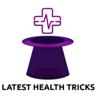

01
Reduce the dependence on paid acquisition
Organic supplies 15.0% of sessions while paid channels supply 49.2%, so every enrollment carries a media cost behind it.
What we own, what you own, and the order it happens in.
The engagement
Nearly half of site sessions come from paid channels. Organic search supplies 15.0%.
The engagement
Paid search carries most of the acquisition load today, and organic ranks fourth in the channel mix.
Organic supplies 15.0% of sessions while paid channels supply 49.2%, so every enrollment carries a media cost behind it.
Only 10.8% of organic clicks land on commercial pages, so most of the traffic that arrives is nowhere near a decision.
Buyers now ask models which health share membership to pick, and the sources those models quote are winnable by us.
October through January is when most of the category shops, so the pages need to be live and indexed well before then.
Part one
Five workstreams, what each one produces, and where the line around the agreement sits.
Scope
Each lane produces something reusable, and each has a clear handover point to your team.
Remove the crawl, speed, and structure problems that cap every other lane.
Build the service, comparison, and audience pages that carry a visitor from question to enrollment.
Get Knew Health named when someone asks a model which health share membership to choose.
Place Knew Health inside the conversations and comparison guides buyers already trust.
Show what each lane changed, in numbers the team can act on.
Workstream detail
Lane 01 clears the ground, lane 02 builds the pages a buyer reads before enrolling.
Remove the crawl, speed, and structure problems that cap every other lane.
Build the pages that carry a visitor from question to enrollment.
Workstream detail
Lanes 03 to 05 build outside authority and keep the whole engagement measurable.
Get Knew Health named when a buyer asks a model which health share membership to choose.
 ChatGPT
ChatGPT Perplexity
PerplexityPlace Knew Health inside the conversations and comparison guides buyers already trust.
 20 comments monthlyConnor leads partnerships
20 comments monthlyConnor leads partnershipsShow what each lane changed, in numbers your team can act on rather than a dashboard.
Boundaries
Some of what you have seen from us was exploratory rather than contracted.
Strategy and research. Technical audits, keyword and competitor mapping, positioning.
Page design and copy drafts. Built in your design system, ready for review.
Content production. Decision-stage pages, including two comparison pages a month.
Reddit and editorial outreach. Community work, placements, partnership development.
AI visibility tracking. Prompt monitoring, citation analysis, and the schema behind it.
Reporting and coordination. Biweekly check-ins and task briefs for your developer.
The platform rebuild. A headless site is on hold, currently expected in Q1 2027.
Brand identity work. A rebrand was proposed separately and has not been commissioned.
Development in Duda. Your team implements, we specify, brief, and check the result.
Paid media management. Google, Bing, and Meta stay with Brenton and the paid team.
Video production. The member story and explainer videos shared in August were concepts.
Portal, CRM, and review platforms. The enrollment flow and Trustpilot remain yours.
Health share Membership, medical cost sharing, and share in eligible Medical Needs.
Plan, cover or coverage, deductible, and any wording that implies insurance.
Part two
The research and build phases are largely done. Approval and implementation are now the constraint.
Position
Every figure carries the date it was measured, and together they set the baseline the next phase is measured against.
Sitemap pages returning a healthy response in August
Of 408 mapped commercial queries rank at all
Of measured commercial AI answers name the brand
Reddit placements live now, from 24 attempts
Editorial mentions, three confirmed live on the page
Position
Three states, and the one that is holding everything else up.
Each one is built in your design system and waiting on marketing review before it can go into the CMS.
Knew Health ranks first in two 2026 health share comparisons that were checked live on September 2.
Copy approval, current product facts, and CMS implementation stand between this work and traffic.
Authority
Each page was opened in a browser on September 4, and the link type was read off the live markup rather than assumed.

LatestHealthTricksBest Health Share Plans in 2026. Knew Health leads the ranking ahead of Medi-Share, Sedera, and Liberty HealthShare.
Best Health Share Plans in 2026. The same ranking on a healthcare technology publisher, link inside the entry.
Wellness and health solutions. A dedicated section framing the brand as a community-driven alternative to insurance.
Best Health Share Plans in 2026. Recorded in August, and the site returns a block to every automated check.
Three confirmed links pass authority straight to knewhealth.com, and two of the pages rank Knew Health first in a 2026 comparison.
Two ranked articles still quote the older starting contribution, so both publishers have a correction and terminology request queued.
Community
Placements are tracked as attempted, live, and removed, so the footprint stays an operating view rather than a claim. Status as of August 29, 2026.
Tracked comment placements since the community work began in June
Placements still live on the thread when the tracker last ran
Placements later removed, mostly by the moderators of a subreddit
Separate communities carrying at least one live comment today
Communities carrying a live commentFreelancers and families comparing cost, predictability, and risk
Threads where eligibility, timing, and monthly cost drive the choice
FIRE readers bridging the years between employer cover and Medicare
People wanting a non-faith membership with everyday wellness value
Accountability
| Owner | Open commitment | Status |
|---|---|---|
| David Lee | Work through the technical SEO task list in Duda, targeting September 11. | Running |
| Marketing | Review the built page copy and designs, then choose the first batch. | Needs review |
| Amber Cram | Approve terminology, current pricing, product facts, and disclaimers. | Needs review |
| Alisha Obaid | Supply the doctor and expert reviewer list for authority pages. | Needs review |
| AI Peekaboo | Redesign priority pages, send drafts, coordinate expert authority pages. | Running |
| AI Peekaboo | Investigate traffic attribution and build the analytics view. | Running |
| AI Peekaboo | Correct the two verified listicles and recheck two uncertain mentions. | Running |
| Connor | Turn the HSA for America conversation into a confirmed meeting. | Confirm date |
| Development | Add Reddit and AI engines to the signup source options. | Confirm status |
| Marketing | Add reviewer and author information to published content. | Not started |
Part three
The sequence, the measurements, and the four things we need from your team.
Sequence
Most of the category shops from October, so the technical base, the new pages, and the content cleanup run in that order.
David works through the technical task list in Duda, marketing picks the first page batch, and compliance confirms the product facts and terminology.
The approved batch goes live in Duda with internal links, metadata, and schema, then gets checked on mobile and desktop.
Broken destinations, orphan pages, and pages buried deeper than crawl level three get fixed, merged, or retired around the new set.
Measurement
Four sources, each answering one question, each with the reading it shows today.
Whether the pages we build earn clicks on the queries that signal a buying decision.
Whether organic search and AI traffic grow as a share of total sessions on the site.
How often models name Knew Health on commercial prompts, and the sources quoted.
Whether the editorial placements hold rankings and where the next link targets sit.
Rhythm and approvals
A biweekly call of 30 to 45 minutes, next on September 15 at 9:00 AM Pacific, with a written recap of decisions and owners after it.
We draft, marketing reviews, Amber signs off on compliance, and David implements the approved batch in Duda once it is ready.
 Day to day
Day to dayThe shared Slack channel carries the task briefs, page links, and placement updates in the days between our calls.
Five to seven pages chosen, with facts and pricing confirmed by compliance.
Dates from development for the technical batch and for the approved pages.
The clinician list for the authority pages, plus approvals to use the member videos.
Reddit and AI engines added as options at signup, so attribution finally works.
Questions on any line in the scope go straight to the shared channel or by email.